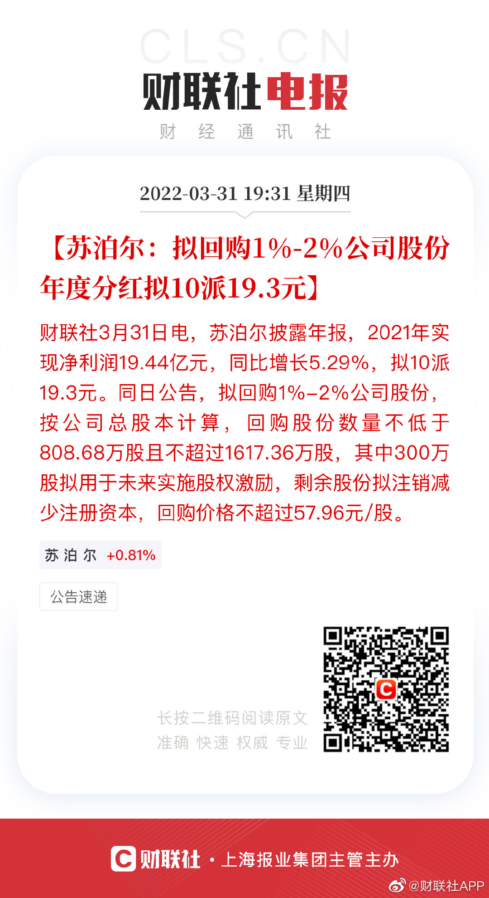
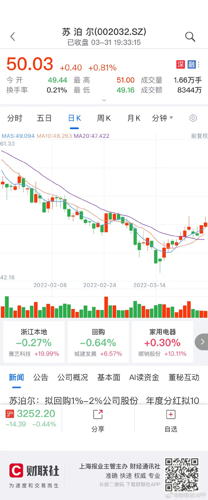

回购注销@财联社APP:【苏泊尔：拟回购1%-2%公司股份 年度分红拟10派19.3元】财联社3月31日电，苏泊尔披露年报，2021年实现净利润19.44亿元，同比增长5.29%，拟10派19.3元。同日公告，拟回购1%-2%公司股份，按公司总股本计算，回购股份数量不低于808.68万股且不超过1617.36万股，其中300万股拟用于未来实施股权激励，剩余股份拟注销减少注册资本，回购价格不超过57.96元/股。
回复@ETF学习群众:我不会因为他们有压力。因为我知道自己在干什么，我知道这么干以前赚了多少钱，以后也会赚钱。我怎么会让一帮从没在市场上赚过钱的人影响我的判断？//@ETF学习群众:不要有压力。@ETF拯救世界:红利连涨四年了。很多朋友觉得它不错，至少很稳，拿着不停涨。但两年以前关注我的朋友应该知道，我们把那样一个一直不涨，涨的时候涨幅也比不上热门板块的品种，买到了第一大持仓压力多大。当时被多少人质疑嘲笑。记不记得有人拿着基金排行，说红利一个月、三个月、半年、一年表现都不好？这就是资本市场，这就是生活。现在坏的，未来也许大放异彩。现在好的，未来也许就是万人冢。你不明白这个，说明你还没入门。
红利连涨四年了。很多朋友觉得它不错，至少很稳，拿着不停涨。但两年以前关注我的朋友应该知道，我们把那样一个一直不涨，涨的时候涨幅也比不上热门板块的品种，买到了第一大持仓压力多大。当时被多少人质疑嘲笑。记不记得有人拿着基金排行，说红利一个月、三个月、半年、一年表现都不好？这就是资本市场，这就是生活。现在坏的，未来也许大放异彩。现在好的，未来也许就是万人冢。你不明白这个，说明你还没入门。
没想到上一条也能吵起来。我其实只是像平常一样，如实的说一下我的观察，非常客观独立，自认为。因为我也是第一次养孩子，也没养过女孩，现在学校也不允许考试排名，所以听了几节网课觉得挺有意思就发一条。这样，我持续跟踪，到小学高年级，到初中，到高中，看看会不会有什么变化，到时候也客观的发出来。另外我之前就知道的，8、9岁的小女孩揍同龄男孩毫无压力多大点事儿啊，因为这个也能吵一通。没必要没必要啊。你看看是不是又要提款了，赶紧的乐呵乐呵多好啊。
你有没有发现我们处在一个造神毁神无限循环的环境中。好就好上天堂，无限吹捧；过一阵坏就坏下地狱，渣都不剩。其实从来也没那么好，也没那么坏。对我们的人生经验应该就是，好的时候自己不要嘚瑟，平常心，无论外界如何评价都能正确认识自己，居安思危，明白一切顺利的时候反而危机四伏。